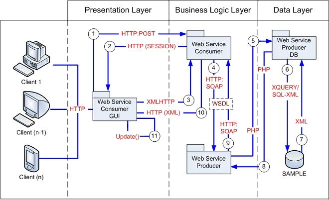

DB2 Health Monitor Sample Application Architecture
|
|
The DB2 Health Monitor Sample Application uses a Service Oriented
Architecture and is therefore designed for a multi-tier environment. However, due to
the lightweight AJAX and PHP technology used, it can be deployed on a single machine.
The sample application can be divided into four packages:
|
Service Oriented Architecture
SOA is a concept that revolves around providing information as a service.
SOA applications require that the information be presented as XML (although JSON
services now exist and are becoming increasingly popular).
Traditionally, SOA applications gather their data from some source (most likely
a database) and use a programming language such as Java, C#, or PHP in order
to build the XML documents and combine the data in a meaningful manner.
In order to make the XML accessible as a Web service, a WSDL document must be constructed.
This document describes the functions (written using a programming language such as
Java, C#, or PHP), as well as their complex XML input and output structures. The WSDL
document is also responsible for exposing these functions on the Web.
The DB2 Health Monitoring Sample Application for PHP, unlike traditional SOA applications,
does not rely on XML DOM parsing in order to navigate and construct the XML document. Instead,
the DB2 database engine accepts a single XQuery statement (with embedded SQL/XML statements) in order
to build the entire document within the database engine, rather than externally.
Although DB2 can store XML natively, all of the data used in this sample is traditional
SQL accessible and formatted data. The DB2 database engine is used to convert it to XML
on-the-fly when executing the desired query.
There are two key parts to any SOA application:
-
A package to gather and assemble the required data as XML from
a known data source (that is, the
Web Service Producer DB
package).
-
A package that contains the functions to expose on the Web via WSDL,
as well as the SOAP server through which communication will occur (that is, the
Web Service Producer
package), and the
DB2Health_Report.wsdl
WSDL document.
To show how this Web service can be used in a practical sense, two additional
packages have been developed. These represent the requirements for consuming
or utilizing SOA:
-
A package that contains the SOAP client which will send requests to the
Web service and will receive the XML output (that is, the
Web Service Consumer
package).
-
To present the XML data in a meaningful format to the user,
some type of graphical interface is required. This represents the final
package for Web service consumption (that is, the
Web Service Consumer GUI
package).
Package Communication
Although each package is composed of numerous parts, they can be grouped
into the categories of traditional design paradigms: presentation,
business logic, and data layers.
These packages communicate as follows:

To view the file-level breakdown of each package, view the 'File Breakdown'
section of the documentation
-
The client views the
index.html
page in the
Web Service Consumer GUI
package, and submits the login information (including the name of the Web
service function) via HTTP POST to the
db2soa.soap.client.php
in the
Web Service Consumer
package.
-
The
db2soa.soap.client.php
page creates a session for the client, and maintains
the session by redirecting the user to the
main.html
page in the
Web Service Consumer GUI
package over HTTP by creating a cookie with a
unique Session ID on the client system.
-
Upon loading the
main.html
page, an asynchronous XMLHTTP GET Request is sent to the
db2soa.soap.client.php
.
In this request the health definition flag and the logout request flag
are appended to the URL.
-
The
db2soa.soap.client.php
validates all input and query parameters using the
class.client.validator.php
class and sends a request to
db2soa.soap.server.php
page via SOAP over
HTTP in the
Web Service Producer
package. The request is then sent to the desired function on the
db2soa.soap.server.functions.php
page within the
Web Service Producer
package. This function is exposed to the
Web Service Consumer
via the
DB2Health_Report.wsdl
WSDL document
-
Because the
Web Service Producer and
Web Service Producer DB
packages are both PHP-based and exist on the same
physical machine, the requested function on the
db2soa.soap.server.functions.php
page uses the
class.db.render.php
class in the
Web Service Producer DB
package in order to process the underlying request.
-
The
class.db.render.php
class validates all Web service function inputs, uses the
class.db.worker.connection.php
class in the
Web Service Producer DB
package to manage the database connection, and uses the
class.db.worker.query.php
class in the
Web Service Producer DB
package to build and execute the correct queries against the database. The
class.db.worker.query.php
class uses a single XQuery statement with embedded
SQL/XML statements to query the DB2 database.
-
Once processed, the DB2 database returns the result of the query as a single
XML document.
-
When the XML result is received, the
class.db.worker.query.php
class frees the memory associated with the result, and the
class.db.worker.connection.php
class closes the connection to the database. The XML result is then passed as a string
back to the specified PHP function on the
db2soa.soap.client.php
page which requested the data.
-
To return the XML result to the
db2soa.soap.client.php
page in the
Web Service Consumer
package from the
db2soa.soap.server.php
page, the data must transported via SOAP over
HTTP.
-
Once the data is received, the
db2soa.soap.client.php
page validates the XML using the
class.client.validator.php
class before sending it back to
main.html
page over HTTP
using the XMLHTTP on-receive handler.
-
Finally, the widgets on the
main.html
page are updated with the parsed XML data using
JavaScript.
© Copyright IBM Corp. 2007. All rights reserved.
IBM®, the IBM logo, DB2®, AIX®, and pureXML™ are
registered trademarks of International Business Machines Corporation in the
United States, other countries, or both.
Zend and Zend Core are registered trademarks of Zend Technologies Limited,
in the United States, other countries, or both.
Mozilla® and Firefox® are registered trademarks of the Mozilla Foundation in the
United States and other countries.
Microsoft, Windows, Windows NT, Internet Explorer®, and the Windows logo are
trademarks of Microsoft Corporation in the United States, other countries, or
both.
Linux is a registered trademark of Linus Torvalds in the United
States, other countries, or both.
Other company, product, or service names
may be trademarks or service marks of others.